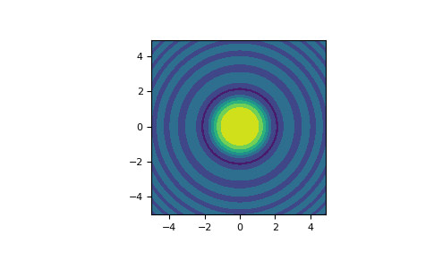

numpy.meshgrid¶
- numpy.meshgrid(*xi, copy=True, sparse=False, indexing='xy')[source]¶
Return coordinate matrices from coordinate vectors.
Make N-D coordinate arrays for vectorized evaluations of N-D scalar/vector fields over N-D grids, given one-dimensional coordinate arrays x1, x2,…, xn.
Changed in version 1.9: 1-D and 0-D cases are allowed.
- Parameters
- x1, x2,…, xnarray_like
1-D arrays representing the coordinates of a grid.
- indexing{‘xy’, ‘ij’}, optional
Cartesian (‘xy’, default) or matrix (‘ij’) indexing of output. See Notes for more details.
New in version 1.7.0.
- sparsebool, optional
If True a sparse grid is returned in order to conserve memory. Default is False.
New in version 1.7.0.
- copybool, optional
If False, a view into the original arrays are returned in order to conserve memory. Default is True. Please note that
sparse=False, copy=Falsewill likely return non-contiguous arrays. Furthermore, more than one element of a broadcast array may refer to a single memory location. If you need to write to the arrays, make copies first.New in version 1.7.0.
- Returns
- X1, X2,…, XNndarray
For vectors x1, x2,…, ‘xn’ with lengths
Ni=len(xi), return(N1, N2, N3,...Nn)shaped arrays if indexing=’ij’ or(N2, N1, N3,...Nn)shaped arrays if indexing=’xy’ with the elements of xi repeated to fill the matrix along the first dimension for x1, the second for x2 and so on.
See also
Notes
This function supports both indexing conventions through the indexing keyword argument. Giving the string ‘ij’ returns a meshgrid with matrix indexing, while ‘xy’ returns a meshgrid with Cartesian indexing. In the 2-D case with inputs of length M and N, the outputs are of shape (N, M) for ‘xy’ indexing and (M, N) for ‘ij’ indexing. In the 3-D case with inputs of length M, N and P, outputs are of shape (N, M, P) for ‘xy’ indexing and (M, N, P) for ‘ij’ indexing. The difference is illustrated by the following code snippet:
xv, yv = np.meshgrid(x, y, sparse=False, indexing='ij') for i in range(nx): for j in range(ny): # treat xv[i,j], yv[i,j] xv, yv = np.meshgrid(x, y, sparse=False, indexing='xy') for i in range(nx): for j in range(ny): # treat xv[j,i], yv[j,i]
In the 1-D and 0-D case, the indexing and sparse keywords have no effect.
Examples
>>> nx, ny = (3, 2) >>> x = np.linspace(0, 1, nx) >>> y = np.linspace(0, 1, ny) >>> xv, yv = np.meshgrid(x, y) >>> xv array([[0. , 0.5, 1. ], [0. , 0.5, 1. ]]) >>> yv array([[0., 0., 0.], [1., 1., 1.]]) >>> xv, yv = np.meshgrid(x, y, sparse=True) # make sparse output arrays >>> xv array([[0. , 0.5, 1. ]]) >>> yv array([[0.], [1.]])
meshgridis very useful to evaluate functions on a grid.>>> import matplotlib.pyplot as plt >>> x = np.arange(-5, 5, 0.1) >>> y = np.arange(-5, 5, 0.1) >>> xx, yy = np.meshgrid(x, y, sparse=True) >>> z = np.sin(xx**2 + yy**2) / (xx**2 + yy**2) >>> h = plt.contourf(x, y, z) >>> plt.axis('scaled') >>> plt.show()
